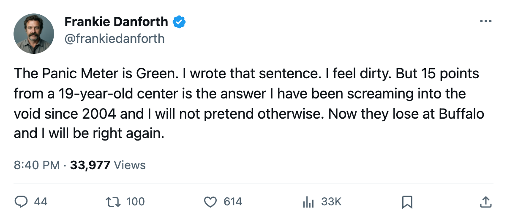
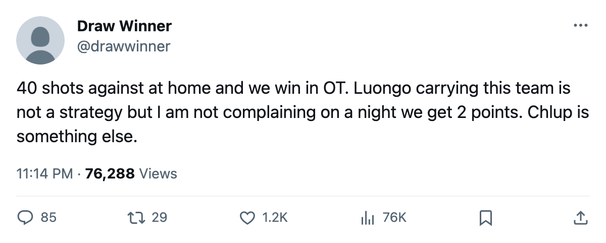

TOR
TORDANFORTH: Code Green, 15 points from a teenager, and the 40 shots I cannot explain
The lead is 6 points with 2 games in hand. The Panic Meter drops. I am not comfortable.
 Frankie DanforthColumnist · Queen City Telegram
Frankie DanforthColumnist · Queen City Telegram
Code Green

The piece
The lead is 6 points with 2 games in hand, and the Panic Meter goes to Green. I have been asking for a second centre since December 2004, and a 19-year-old answered while I was still writing the question.
Petr Chlup87 has 15 points in 16 games at 20.5 minutes a night. He is 19. He is paid $2.34M.  Mats Sundin92 has 11.
Mats Sundin92 has 11.  Brad Richards87 has 9. The centre behind the captain, the slot I have called a tax for 18 months, is filled by a kid who was in junior last spring.
Brad Richards87 has 9. The centre behind the captain, the slot I have called a tax for 18 months, is filled by a kid who was in junior last spring.
I will grant you all of that. What I will not grant you is Saturday.
 Los Angeles Kings put 40 shots on net at the Air Canada Centre. Toronto managed 35. Five fewer, one more goal, and a win in overtime. That is how
Los Angeles Kings put 40 shots on net at the Air Canada Centre. Toronto managed 35. Five fewer, one more goal, and a win in overtime. That is how  Roberto Luongo95 wins you hockey games. The season totals on goals still read right: 53 for, 29 against in 16. The shot counts keep reading wrong. The desk logged that gap on 2005-11-09 and it has not closed.
Roberto Luongo95 wins you hockey games. The season totals on goals still read right: 53 for, 29 against in 16. The shot counts keep reading wrong. The desk logged that gap on 2005-11-09 and it has not closed.
The Telegram's prediction desk called Toronto to earn at least 1 point against LA, and that call was good. The same desk called Toronto to earn at least 1 point at Dallas on 2005-11-08, and that call was wrong. I will own the miss: Toronto lost 4-2 in regulation, not overtime, and earned nothing. Two wins since. The lead over  Boston Bruins was 3 points the morning after Dallas. It is 6 now, with Toronto holding 2 games in hand.
Boston Bruins was 3 points the morning after Dallas. It is 6 now, with Toronto holding 2 games in hand.
Boston Bruins lost to Edmonton in overtime on 2005-11-11 and sits at 20 points in 14 games. The lead cannot be erased without Toronto collapsing. I will be watching for the collapse.
What comes next
Toronto plays Buffalo on Tuesday, Detroit on Thursday, and Boston on Saturday. Three games in 4 days. Buffalo is missing  Tim Connolly78 with a rib, out until 2005-11-30. Detroit is missing
Tim Connolly78 with a rib, out until 2005-11-30. Detroit is missing  Derian Hatcher86,
Derian Hatcher86,  Brendan Shanahan87, and
Brendan Shanahan87, and  Pavel Datsyuk77. The road ahead has bodies missing from it.
Pavel Datsyuk77. The road ahead has bodies missing from it.
I would rather have 6 points and 40 shots against than 3 points and a clean sheet. But I would rather still be angry about the shot totals, and I am.
 Marian Gaborik99 sits at 99 overall with a +11 on the Development Index. I cannot argue with 99. I can argue with $11.90M for 8 points. That argument is not new and I will keep making it until someone trades me the winger I have wanted since October.
Marian Gaborik99 sits at 99 overall with a +11 on the Development Index. I cannot argue with 99. I can argue with $11.90M for 8 points. That argument is not new and I will keep making it until someone trades me the winger I have wanted since October.
The code is Green. No alarm. No comfort. Three games in 4 days decide whether this holds.

